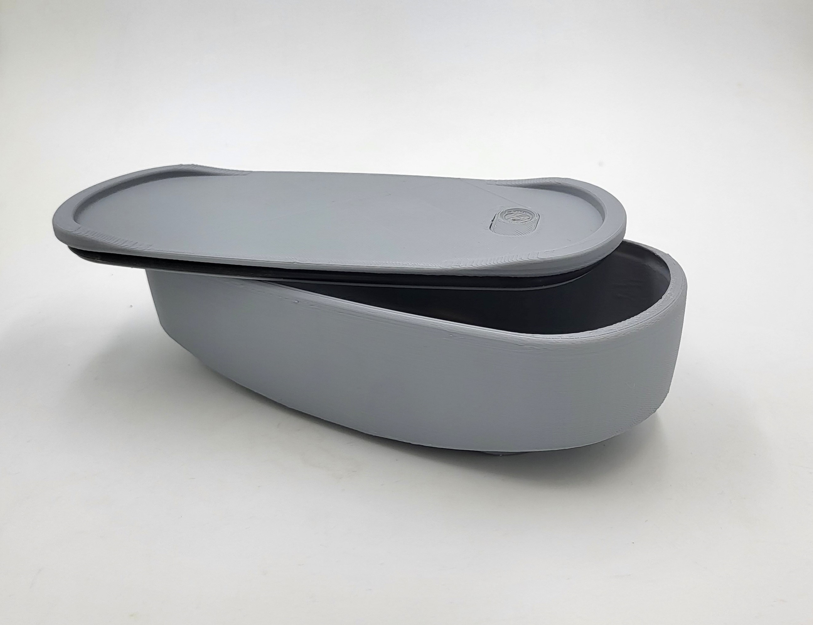
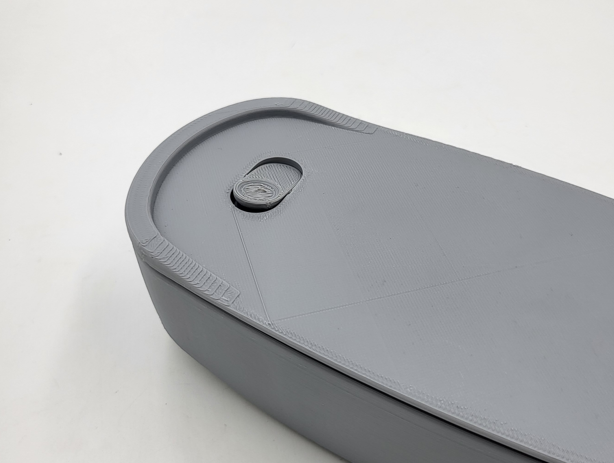
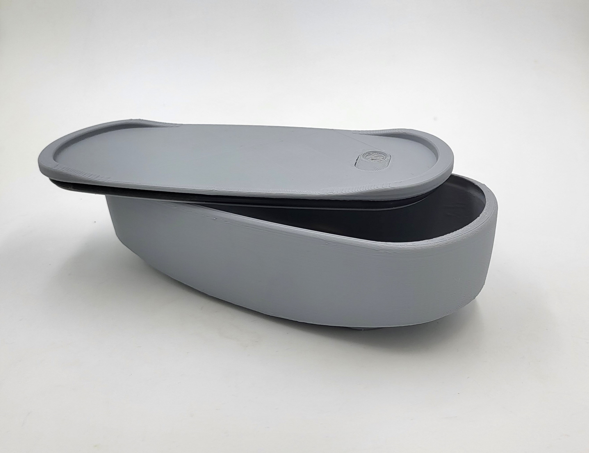
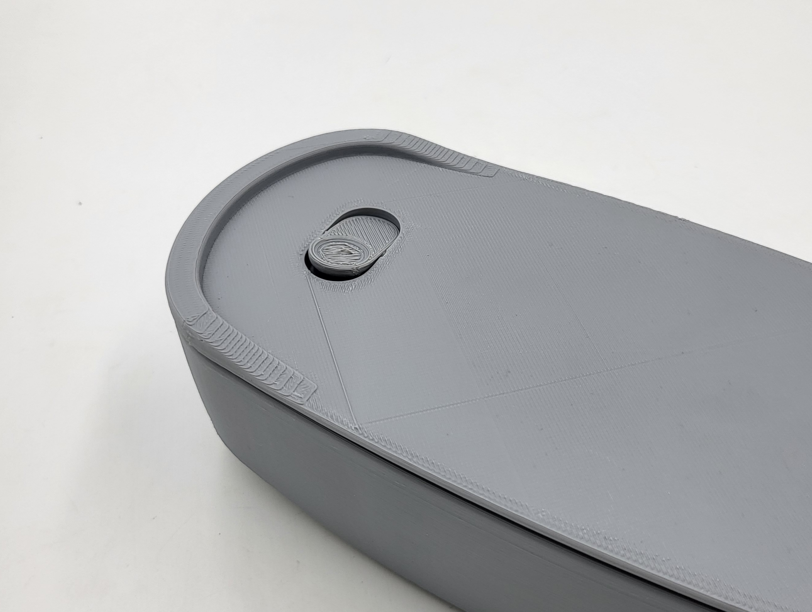

Monch
A lunch box for those new to packing their food.
The form is animated, simple, and intuitive to help mitigate the cognitive gap between not packing one's lunch at all to packing consistently. This project was different from the rest in that there were no due dates during the process; we were to discover our own.
Time |
Fall 2023, 5 weeks |
Role |
ID, UX Research, CMF, Ergonomics |
Tools |
SolidWorks, Keyshot, IdeaMaker, FDM Printer |

 



Looking at existing lunch carriers.
What works across cultures? Why? What were the reasons for each lunch carrier's design? For status, utility, ritualizing food, etc.?
I focused on the idea of ritualizing food. This can be found in small differences in how people pack their food: whether they throw their food all together or deliberately plate their meal.
Final considerations + thoughts.
This project affirmed my love for the user/person - it was fun for me to learn about different mindsets and habits, and how our everyday objects affect that. Given more time, I'd reexplore utensil storage and CMF.
In all, my main focus for this project became sizing to everyday things: fitting into the backpack, fitting a cleaning sponge, the curve of a spoon, and the hand.As well as product promise: does the form promise comfort? Simplicity? Easy integration into routine?